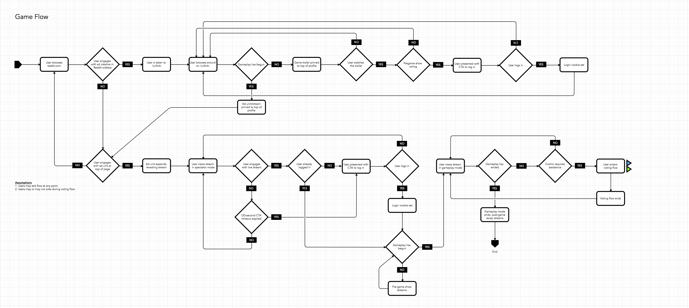
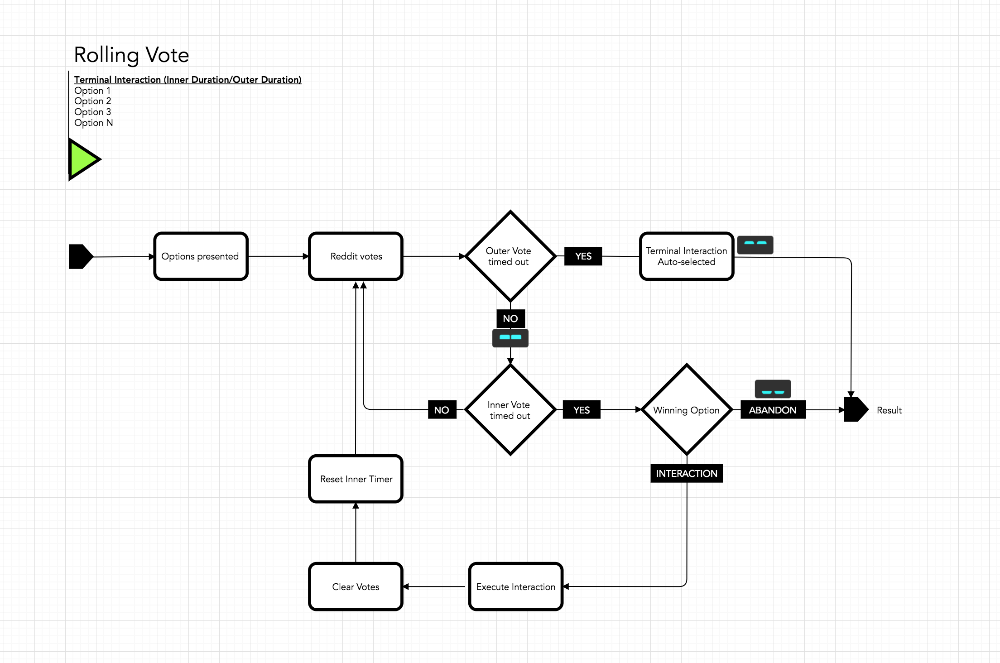
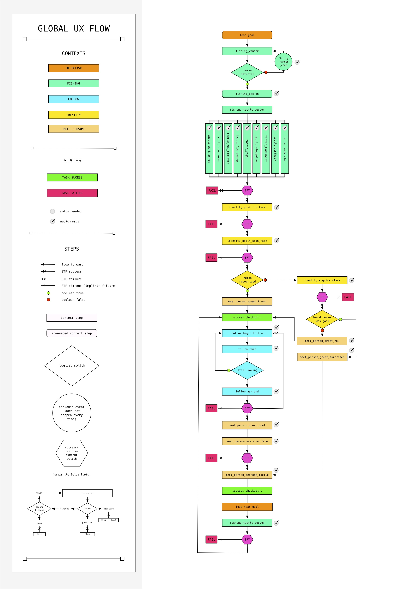

Interaction Wayfinding
A commonly-used tool in the UX Designer's pocket is the user journey. While this tool does a great job of giving a high-level view of the user's anticipated needs, psychology, and path through a journey I find that there tends to be one flaw in its execution.
User journeys don't tend to think like software behaves. Having worked for some time as a software engineer, I can attest to the fact that software nearly never does exactly what you want it to do. This creates a gap between the design team's intent for a user's experience and the way the engineering team approaches building a specification for that experience.
I made my transition from software engineer to experience designer whilst working on the Needybot project. Having worked on the engineering side, I knew how complex of a project Needybot was—both in the complexity of the software as well as in the complexity of the interactions he was meant to have. Afterall, Needybot was a user in this experience as well.
I decided to map out every interaction he would have, from the moment he "woke up" in the morning until the time he "went to bed." This would be the first time I ever made an interaction flow as I've come to call them, and it has been a staple tool for our team on every project since.
The idea is simple: a codified map of every possible logical pathway Needybot could take in his daily interactions with the people in our office. What I ended up with was something resembling a flow chart, but one that had both engineering specs and ux design encoded into it. I like to call it an Interaction Map.

In the beginning my practice was a bit crude, but project-by-project I began to develop a language and system around how to represent the global flow of an interaction. Since I've applied this same technique to mobile, VR, robotics, and live retail.
I started introducing modules to my interaction maps, much in the same way information is encapsulated in an object or class file in any object-oriented language. This allowed me to represent even more complicated patterns within the ecosystem of a project without having to print out and tile a 10' sq. print.

The benefit to our design team is that it helps us think about the journey at a fine level of granularity—similar to how an engineer must build the software a piece at a time. The benefit to our engineering team is a soft spec of each function, datum, and configuration that needs to exist in the developed software.
These maps can go from a simple A -> B sort of diagram, helping us to understand the available actions at a given point during an interaction. Other times, the graph of interactions gets unwieldy to the uninitiated.
